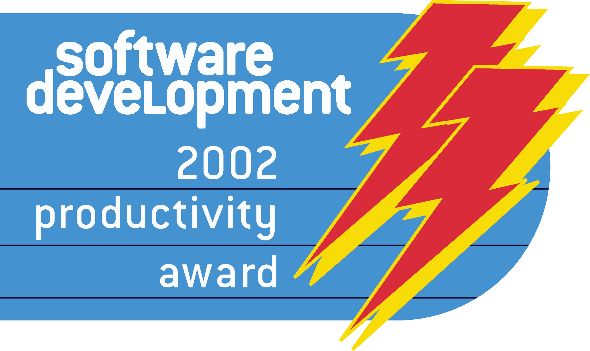

News
Ant 1.6.5
June 2, 2005 - Ant 1.6.5 Available
Apache Ant 1.6.5 is now available for download.
This is a bug fix release.
Ant 1.6.4
May 19, 2005 - Ant 1.6.4 Available
Apache Ant 1.6.4 is now available for download.
This is a bug fix release.
Ant 1.6.3
April 28, 2005 - Ant 1.6.3 Available
Apache Ant 1.6.3 is now available for download.
There is a large list of fixed bugs and enhancements.
Some of the bugs affecting the embedded use of Ant are fixed.
Antidote Retired
April 4th, 2005 - The Apache Ant Project Retires Antidote, the Ant GUI
The Antidote subproject was once started to provide a GUI for Ant at a time where IDE support for Ant was far from usable. Unfortunately it never attracted a developer community of its own.
At the same time IDE support for Ant has become ubiquitous by now and there is little reason to have a GUI just for Ant. This makes it even less likely that volunteers will start to spend time working on it.
Antidote's development has been stalled for years now, despite some efforts to rejuvenate it by single developers. Therefore the Ant developers have chosen to retire Antidote.
Antidote will no longer be developed by the Ant project; its CVS module will be shut down.
If you are interested in Antidote's sources to learn from or build on it, you can find snapshots at http://archive.apache.org/ant/antidote/.
Ant 1.6.2
July 16, 2004 - Ant 1.6.2 Available
Apache Ant 1.6.2 available for download.
Nested elements for namespaced tasks and types may belong to the Ant default namespace as well as the task's or type's namespace.
All exceptions thrown by tasks are now wrapped in a buildexception giving the location in the buildfile of the task.
Ant 1.6.2 fixes a large number of bugs and adds a number of features which were asked for by users on Bugzilla.
Wiki Migration
February 29, 2004
The Ant Wiki pages have been migrated to their new home on the Apache Wiki farm.
Ant 1.6.1
February 12, 2004 - Ant 1.6.1 Available
Apache Ant 1.6.1 is still available for download.
The ASF Board has approved the new Apache License 2.0. For a copy of that license, please see http://www.apache.org/licenses/.
The Ant 1.6.1 release is delivered with the Apache License 2.0.
Ant 1.6.1 fixes several bugs, most notably the handling of the default namespace for nested elements.
Ant 1.6.1 also introduces initial support for compiling with Java 1.5.
Ant 1.6.0
December 18, 2003 - Ant 1.6.0 Available
Apache Ant 1.6.0 is still available for download.
As we've already said in the announcements of Ant 1.5.4, this release requires JDK 1.2 or later to run.
Ant 1.6.0 adds a lot of new features, most prominently support for XML namespaces as well as a new concept of Ant libraries that makes use of namespaces to avoid name clashes of custom tasks. For a longer list of fixed bugs and new features see the release notes.
If you find anything that hasn't been covered in the manual (I bet you did) or could be explained better, feel free to help us out in the Wiki.
Ant 1.5.4
August 12, 2003 - Ant 1.5.4 Available
Apache Ant 1.5.4 is still available for download.
This is a minor bugfix release that fixes a problem with the
javah task on JDK 1.4.2 and a couple of bugs in the
Visual Age for Java intergration tasks. If you don't use javah or
VAJ, there is no reason to upgrade.
Java Pro 2003 Readers Choice Award

June 11th, 2003: Ant wins a Java Pro readers' choice award
Ant has won the Java Pro 2003 Readers' Choice Award for
Most Valuable Java Deployment Technology.
Thanks to Java Pro and all its readers. You can read about these awards at the Java Pro website.
JDJ Editors Choice Award

June 2003: Ant wins JDJ Editors' Choice Award
"Ant is the hammer of the Java world: without it, civilization might have progressed, but much more slowly than it has. Ant is one of the most useful build tools I have ever had the pleasure to use." - Joe Ottinger
Ant keeps on winning!
June 9th, 2003: Ant wins the JavaWorld Editors' Choice Award
Ant has won the JavaWorld Editors' Choice Award for
Most Useful Java Community-Developed Technology
for the second time in a row! Read the
full article -- or jump directly to the bit about
our award :)
Ant 1.5.3
April 9, 2003 - Ant 1.5.3 Available
Apache Ant 1.5.3 is still available for download.
Ant 1.5.2
March 3, 2003 - Ant 1.5.2 Available!
The final version of Ant 1.5.2 is available for download. If you have any feedback on this release, feel free to join the discussion on the dev and user mailing lists.
Ant Top Level Project
November 18, 2002
The Apache board created the Apache Ant top level project. Ant has now migrated from the Jakarta project into an Apache project of its own. This is primarily an organizational change and will not affect the technical aspects of the project. Ant retains a strong association with the Apache Jakarta project. One effect of this change is that the Ant webpage is now located at http://ant.apache.org/
Ant 1.5.1
October 3, 2002 - Ant 1.5.1 Available !
The final version of Ant 1.5.1 is still available for download. If you have any feedback on this release, feel free to join the discussion on the ant-dev and ant-user mailing lists.
Ant 1.5
July 15, 2002 - Fix for Cygwin problem in wrapper script available
The wrapper script of Ant 1.5 needs to be replaced with a new version for Cygwin users. See the FAQ for details.
July 10, 2002 - Ant 1.5 Released!
The final version of Ant 1.5 is now available for download. If you have any feedback on this release, feel free to join the discussion on the ant-dev and ant-user mailing lists.
Ant wins again!
Apr 29, 2002: Ant wins Software Development magazine's 2002 Productivity Award.
Ant has been awarded a 2002 Productivity Award by Software Development magazine. Read the press release for more information and the full list of winners.
Ant has won!
Mar 26, 2002: Ant wins the JavaWorld Editors' Choice Award
Ant has won the JavaWorld Editors' Choice Award for
Most Useful Java Community-Developed Technology.
Read the
full article -- or jump directly to the bit about
our award :)
Java 1.4 Support
Feb 15, 2002: Java 1.4 Support
Java 1.4 has now been released by Sun. The latest Ant source supports the new assert statement in the compiler task via the source attribute. It also contains a compatibility fix needed for some ant tasks on Java 1.4 over Windows XP. If you have problems running Ant 1.4.1 on WinXP/Java 1.4, please use a recent build or compile your own version from the source tree.
See our new logo!
Have a look at our new cool logo!
Ant 1.4.1
11 October 2001 Ant 1.4.1 released !
Please visit the download area.
Best-Practices Profile of Ant at Sun's Dot-Com Builder
Sun has released an introductory article on Ant on their Dot-Com Builder site on May 30 2001. See http://dcb.sun.com/practices/profiles/ant.jsp